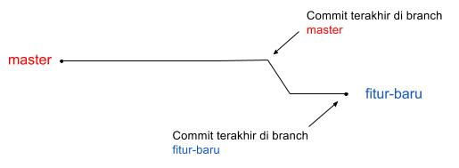

Branching
Seperti source control pada umumnya, git memiliki fitur branching. Artinya perubahan versi source code dapat bercabang. Perubahan pada satu cabang tidak akan berpengaruh pada cabang lainnya sampai dilakukan merge atau rebase.
Canonical/Master Branch
- Master -> shared development branch, tidak boleh langsung push ke branch master
- Branch master selalu dijadikan sebagai reference (upstream)
- Branch master yang stable akan di-tag
- Tag production akan di deploy ke production
Feature Branch
- Setiap developer ketika mendapat task untuk fitur baru harus membuat feature branch baru
- Perubahan yang terjadi pada feature branch ini sangat disarankan untuk fokus dan komplit untuk satu perubahan.
- Prinsip atomic: satu fitur yang lengkap dan tidak mengganggu fitur lain
- Bila diperlukan untuk mengubah modul lain yang berkaitan maka tidak apa-apa
- Bila ditemukan bug/perubahan fitur di modul lain yang tidak ada hubungannya maka kerjakan di branch yang lain.
- Ketika feature branch akan di-merge ke master melalui proses merge request dan review.

Ilustrasi: Branch master dan fitur
Merge
Proses merge adalah proses menggabungkan versi source code dari satu cabang ke cabang yang lain, sehingga branch/cabang target akan memiliki perubahan yang sama dengan branch source.
Sebagai best practice selalu gunakan aturan berikut:
masterbranch sebagai target branchfeaturebranch sebagai source branch
Contoh (command line merge):
~$ git checkout master #master sebagai target branch yang kita checkout
~$ git merge feature #feature sebagai source branch yang bi merge ke master branch
Lebih lanjut untuk metode merge dibahas di sini.
Rebase
Poses rebase adalah proses menggeser/mengupdate base dari cabang/branch, sehingga branch yang sedang aktif akan terupdate dari branch source, tapi, kebalikan dari proses merge, bukan ditambah di depan branch target, tetapi digeser base dari branch target. Sehingga di branch yang baru akan memuat histori perubahan yang sama dengan branch source, hanya saja ada tambahan di depannya.
Sebagai best practice, aturannya adalah:
- gunakan
masterbranch sebagai source branch - gunakan
featurebranch sebaga target branch
Contoh (command line rebase):
~$ git checkout feature #feature sebagai target branch yang kita checkout
~$ git pull --rebase origin master #pull rebase langsung dari remote master
Lebih lanjut untuk proses rebase ada di sini.